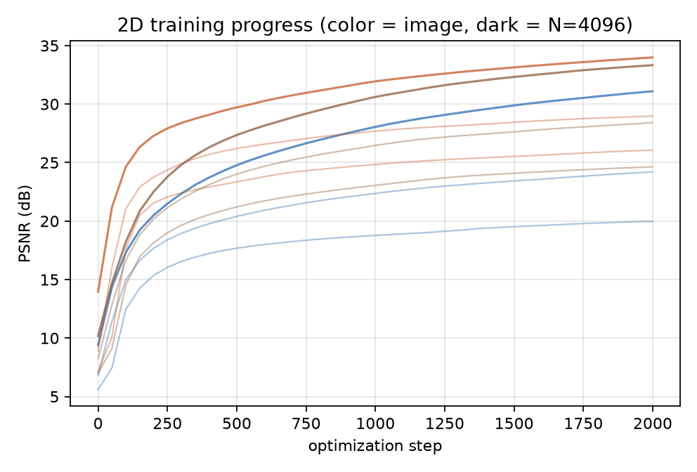

A from-scratch PyTorch implementation of 2D image fitting and 3D
scene reconstruction with Gaussian primitives.
Code and reproduction instructions: github.com/maxtlee/GaussianSplatting
A scene is a cloud of translucent Gaussians. Each 2D Gaussian has a center μ, a covariance Σ, an RGB color c, and an opacity α. The covariance is never optimized directly; it is built from a scale and a rotation, Σ = R S ST RT, which keeps it positive semi-definite by construction. A Gaussian's weight at a pixel is w(x) = exp(−½ (x−μ)T Σ−1 (x−μ)) and its pixel alpha is opacity · w.
Rendering sorts the Gaussians front to back and applies the over operator, C = ∑i ci αi Ti with Ti = ∏j<i(1−αj). Instead of a Python loop over Gaussians, the transmittance is the exclusive prefix product of (1−α) along the sorted axis (a cumprod), and the color sum is one matmul, so the whole compositing step is a few vectorized operations and every parameter receives gradients. A 4 GB GPU cannot materialize the full (pixels × Gaussians) weight tensor, so the image is processed in horizontal bands and each band evaluates only the Gaussians whose support reaches it (a Gaussian is treated as zero beyond 3.5σ). This keeps the work proportional to the local overlap.
For 3D, each Gaussian adds a 3D mean and a 3D covariance built from a per-axis scale and a rotation stored as a unit quaternion. Rendering projects the mean through a pinhole camera and pushes the covariance through the projection's Jacobian J at the mean, giving a 2D mean and a 2D covariance (Σ′ = J Σcam JT) that the same 2D rasterizer composites, sorted by camera-space depth zc.
Adaptive densification grows the set where the fit under-reconstructs it. Every 200 steps each Gaussian is scored by the mean magnitude of the loss gradient with respect to its position since the last pass, gi = (1/M) ∑k ‖∇μiLk‖2. Under-fit Gaussians are densified: a small one (max scale below a size threshold) is cloned in place, a large one is split into two children offset along its major axis by half that axis's length, each with scale divided by 1.6. Gaussians with opacity below 0.005 are pruned, and the total is capped at a budget. The optimizer carries Adam moments for survivors and zeroes them for new Gaussians (the number of primitives changes, so moments are resized alongside the parameters). The same rule drives the 2D and 3D fits; only the representation differs.
Each target is fit independently with a fixed count N, Adam at learning rate 1e-2 for 2000 steps on the full image (the reported PSNR is read directly off the exact full-image MSE), starting from the prescribed spread-out initialization. The three targets differ in content: coffee is large smooth regions, astronaut mixes smooth areas with fine, high-contrast detail, and cat is dense high-frequency fur.
| target | N = 256 | N = 1024 | N = 4096 | densified (N = 1024) |
|---|---|---|---|---|
| coffee | 24.64 | 28.42 | 33.33 | 30.74 |
| astronaut | 19.98 | 24.20 | 31.09 | 24.54 |
| cat | 26.06 | 28.97 | 33.99 | 29.62 |

Rule. Every 200 steps I score Gaussians by the mean position-gradient magnitude accumulated since the previous pass and densify the top 25% of that score (I used a fraction rather than the reference gradient threshold because the gradient scale depends on the coordinate system and a fixed 2e-4 densified almost nothing at pixel scale). An under-fit Gaussian is cloned when its larger axis is at most 2% of the image width, and split into two children along its major axis (offset ± half the major axis, scales divided by 1.6) otherwise. Gaussians whose opacity falls below 0.005 are pruned, and the count is capped at a budget. Densification runs until 80% of the steps so the last 20% refine the grown set.
Densified fit. On coffee, growing from 256 toward a budget of 1024 reaches 1024 Gaussians and 30.74 dB (right panel below) versus 28.42 dB for a plain fixed fit at the same 1024 — a gain of 2.3 dB. The densified set concentrates capacity in the detailed rim and spoon and leaves the flat table and cup interior to a few large Gaussians.

Densification beats the fixed fit at the same count on all three targets: coffee +2.32 dB, cat +0.65 dB, astronaut +0.34 dB. The gain is largest on the smooth, wide-range target, where adaptive placement matters more, and smallest on astronaut, where the difficulty is high-contrast structure rather than where to spend capacity.
Every target improves monotonically with the number of Gaussians, with the largest jump between 1024 and 4096:


Each run fits a cloud to the 44 posed training views. Every step picks one training camera at random, projects all Gaussians, sorts by camera-space depth, composites, and takes an MSE loss against that view; Adam at 1e-2 for 1500 steps (2500 for the long densified run). Initialization is a coarse random cloud in a [-1.5, 1.5]3 box with scale 0.08 and identity rotation, as prescribed. The held-out number is the real test: it uses the 12 views the optimizer never sees.
| model | Gaussians | training PSNR | held-out PSNR |
|---|---|---|---|
| fixed, N = 4000 | 4000 | 23.60 | 16.51 |
| fixed, N = 2500 | 2500 | 23.24 | 16.77 |
| densified | 2488 | 23.99 | 16.20 |

At N = 4000 the mean training PSNR is 23.60 dB. The reconstructions are recognizably the sphere scene but soft: the global (per-camera) depth sort is an approximation of the true per-pixel order, so overlapping semi-transparent primitives blend and surfaces stay slightly diffuse, and the background wall and floor carry a low-amplitude fog.

The densification code is the same as 2D; only the representation changes: positions and scales are 3D, rotation is a quaternion (cloned/split children inherit it), the size threshold is in world units (0.02) instead of pixels, the position-gradient score is accumulated over the randomly sampled cameras between passes, and pruning low-opacity primitives is what removes floaters. Carrying Adam moments across the resizing is unchanged.
The densified run grew from 1000 to 2488 Gaussians and produced a higher training PSNR (23.99 dB) but a lower held-out PSNR (16.20 dB) than a plain fixed fit at essentially the same count (2500 → 23.24 / 16.77 dB). The extra primitives are spent improving the training views, including near-transparent floaters that satisfy those views but smear from new angles — exactly the failure the method is meant to fix, and pruning did not remove all of them at this scale. The held-out gap (16.5 vs 23.6 training) shows the fixed model is also memorizing rather than reconstructing. I report the negative result rather than claim floater reduction: with this global-sort renderer and only 1500 steps, densification increases training fit without improving generalization.


Held-out PSNR (16.5 dB) is much lower than training PSNR (23.6 dB), so a large part of the training fit is memorization. A 24-frame orbit at a fixed 20° elevation (a viewpoint family the optimizer never saw) renders the scene consistently and shows where it breaks down: the spheres keep their color and rough position, but their silhouettes are soft, thin contacts between spheres are mushy, and the wall/floor fog drifts as the camera moves. This is the expected consequence of (a) a random cloud with no structure-from- motion initialization, (b) a single global depth order instead of a per-pixel one, and (c) view-independent color — all simplifications relative to a full splatting rasterizer. The orbit is saved as assets/orbit_fixed.mp4; a subset of frames:

All code is at github.com/maxtlee/GaussianSplatting. Images in assets/images/ are from the scikit-image sample data (coffee, cat: CC0) and NASA (astronaut: public domain); the sphere scene and camera poses are the provided synthetic dataset.